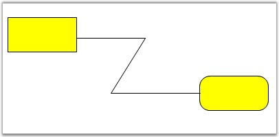
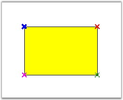
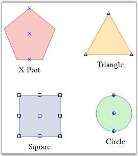

Port is an object used to establish a connection between the node and the link.
Central Port
By default, the central port for a diagram is enabled using the EnableCentralPort property available for the node.
|
Property |
Description |
|
EnableCentralPort |
Used to enable or disable the CentralPort. |
The central port for a diagram node can be enabled by using the following code snippet.
|
[C#]
Ellipse ellips = new Ellipse(100, 100, 200, 100); ellips.EnableCentralPort = true; |
|
[VB]
Dim ellips As New Ellipse(100, 100, 200, 100) ellips.EnableCentralPort = True |
In the above code snippets, the Central Port is enabled for an Ellipse node.
Sample diagram is as follows:

Figure 68: Central Port
Custom ports
Custom ports can be defined at any position of the diagram node, thus allowing the creation of any number of connection ports at any position on the node. All the connections can be defined from the required point or port. Unlike the default port, the custom port when set, will be visible. The DrawPorts property must be enabled for custom ports to be created.
 Note: When a link is drawn to a node or another
link and when the EnableCentralPort is set to True, the links cannot be
connected to the custom port. Hence make sure to disable that property for the
links and the nodes to connect the links to the custom ports.
Note: When a link is drawn to a node or another
link and when the EnableCentralPort is set to True, the links cannot be
connected to the custom port. Hence make sure to disable that property for the
links and the nodes to connect the links to the custom ports.
|
Property |
Description |
|
DrawPorts |
Specifies whether creation of custom ports is enabled. Default value is True. |
The Syncfusion.Windows.Forms.Diagram.ConnectionPoint class is used to create custom ports and define their properties. For details, see ConnectionPoint Properties.
The following code snippet illustrate the Custom Ports,
|
[C#]
Syncfusion.Windows.Forms.Diagram.Rectangle rect = new Syncfusion.Windows.Forms.Diagram.Rectangle(100, 100, 100, 50); rect.DrawPorts = true; Syncfusion.Windows.Forms.Diagram.ConnectionPoint cp = new Syncfusion.Windows.Forms.Diagram.ConnectionPoint(); rect.Ports.Add(cp); |
|
[VB]
Dim rect As New Syncfusion.Windows.Forms.Diagram.Rectangle(100, 100, 100, 50) rect.DrawPorts = True Dim cp As New Syncfusion.Windows.Forms.Diagram.ConnectionPoint() rect.Ports.Add(cp) |
Sample diagram is as follows.

Figure 69: Rectangle Node with Four Custom Ports
Port Shapes
The VisualType property available for the port can be used for customizing the shape of the port. There are several types of ports available for customizing the port's shape, each of which differs depending on how they are positioned within the symbol and how they are rendered. For example, a CirclePort can be positioned anywhere within the bounds of a symbol and renders itself as a circle containing cross hairs. Another example is a CenterPort, which always positions itself in the center of the symbol and has no visual representation.
|
Property |
Description |
|
VisualType |
The default value is XPort. The options included are as follows:
· CirclePort · XPort · TrianglePort · SquarePort · RhombPort · Custom |
The visual types for a port can be defined using the following code snippet.
|
[C#]
port.VisualType = PortVisualType.RhombPort; |
|
[VB]
port.VisualType = PortVisualType.RhombPort |
Sample diagram is as follows,

Figure 70: Different Port Shapes